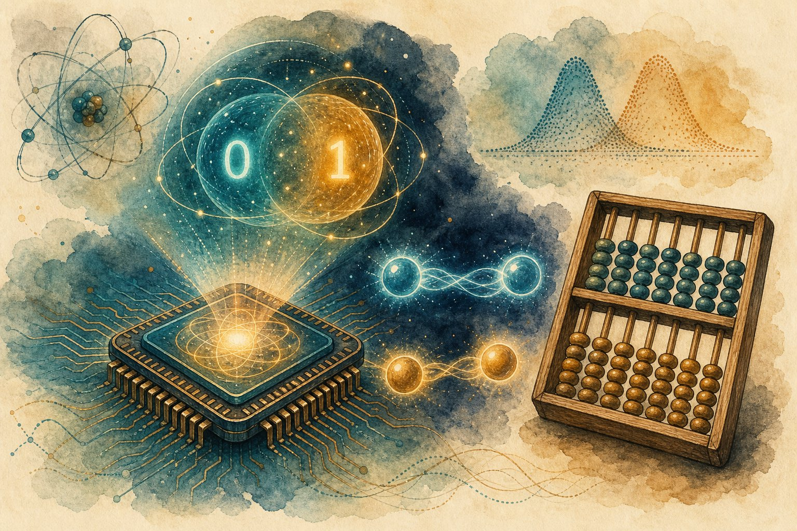

Quantum ML primer (hype-filtered)
Qubits, superposition, and the honest question: what can quantum computers actually do for ML today? Learn enough to read the papers — and to spot the hype.

Figure 55.1 — Quantum: exponential state spaces you can’t fully look at. The art is asking questions nature answers cheaply.
1. Qubits in 5 minutes
- Bit vs qubit: a bit is 0 or 1; a qubit is α|0⟩ + β|1⟩ — a blend until measured (then it collapses to one outcome, probabilistically).
- Superposition: n qubits hold 2ⁿ amplitudes at once. Entanglement: qubits correlated so measuring one constrains others. Interference: amplify right answers, cancel wrong ones — the actual compute.
- Catch: you can’t read all 2ⁿ amplitudes (measurement collapses); noise (decoherence) corrupts fast. Today’s machines: ~100–1000 noisy qubits (NISQ era).
2. The QML playbook
| Method | Idea | Status |
|---|---|---|
| VQC / QNN | Parametrised circuit as a neural net layer | Toy demos; barren plateaus bite at scale |
| Quantum kernels | Feature map into Hilbert space + SVM | Niche wins on crafted datasets |
| QAOA | Approximate combinatorial optimisation (routes, schedules) | Promising; classical still ahead mostly |
| Quantum simulation | Chemistry/materials (VQE) | Strongest near-term case — physics, not ML |
3. The hype filter (memorise this)
- “Exponential speedup” — for which problem, vs which classical baseline, on what hardware? Most ML speedups evaporate against good classical methods or data-loading costs.
- Barren plateaus: gradients vanish exponentially in random deep circuits — training fails silently. Structured ansätze + small widths help.
- Data loading: encoding classical data into qubits (QRAM assumptions) often costs more than any quantum gain. Quantum-native data (sensors, chemistry) is the fair fight.
- Honest take (2026): learn it for literacy + simulation-adjacent roles; don’t bet production ML roadmaps on advantage that hasn’t arrived.
Red flags in QML pitches
“Quantum will replace GPUs” (no) · benchmarks vs strawman classical baselines · ignoring error-correction overhead (millions of physical qubits per logical) · no mention of barren plateaus or loading costs.
Short notes
Qubits = superposition + entanglement + interference; NISQ = ~100–1000 noisy qubits. Playbook: VQC hybrid loops, quantum kernels, QAOA, VQE simulation. Filter hype: which problem, which baseline, loading costs, plateaus, error-correction overhead. Literacy yes; production bets no (yet).
Point notes
- 2ⁿ amplitudes, 1 measurement.
- Quantum evaluates, classical opts.
- Barren plateaus kill deep VQCs.
- Loading costs eat speedups.
- Chemistry > ML (near-term).
MCQs
5 questions1. Measuring a qubit in superposition gives:
2. A VQC training loop splits work as:
3. Barren plateaus in VQCs mean:
4. Biggest hidden cost in most QML speedup claims:
5. Strongest near-term quantum application today:
Practice questions
P1. A startup claims “quantum neural nets beat XGBoost on churn.” Your 4 due-diligence questions?
(1) Which classical baseline, tuned how hard? (2) Include data-loading + shot counts in runtime — still faster? (3) How many qubits/features — toy or real scale? (4) Reproduce on held-out data with error bars. 99% of such claims fail (1) or (2).
P2. When would you genuinely recommend a quantum approach to a client?
Quantum-native problems: molecular simulation, materials discovery, certain optimisation with structure — with a quantum-literate team and a classical benchmark to beat. Deliverable: a pilot comparing quantum vs best classical on THEIR instances, with full cost accounting. Never “quantum strategy” without a problem.
P3. Explain barren plateaus to an ML engineer (analogy + mitigation).
Like vanishing gradients, exponentially worse: in wide random circuits, almost all directions look flat, so gradient descent finds nothing. Mitigate: shallow structured ansätze (problem-inspired), local cost functions, layerwise training, small qubit counts. If loss never moves on a simulator, the ansatz — not the optimizer — is guilty.